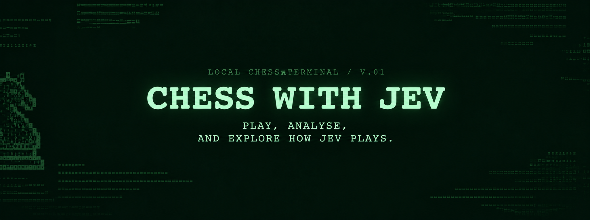
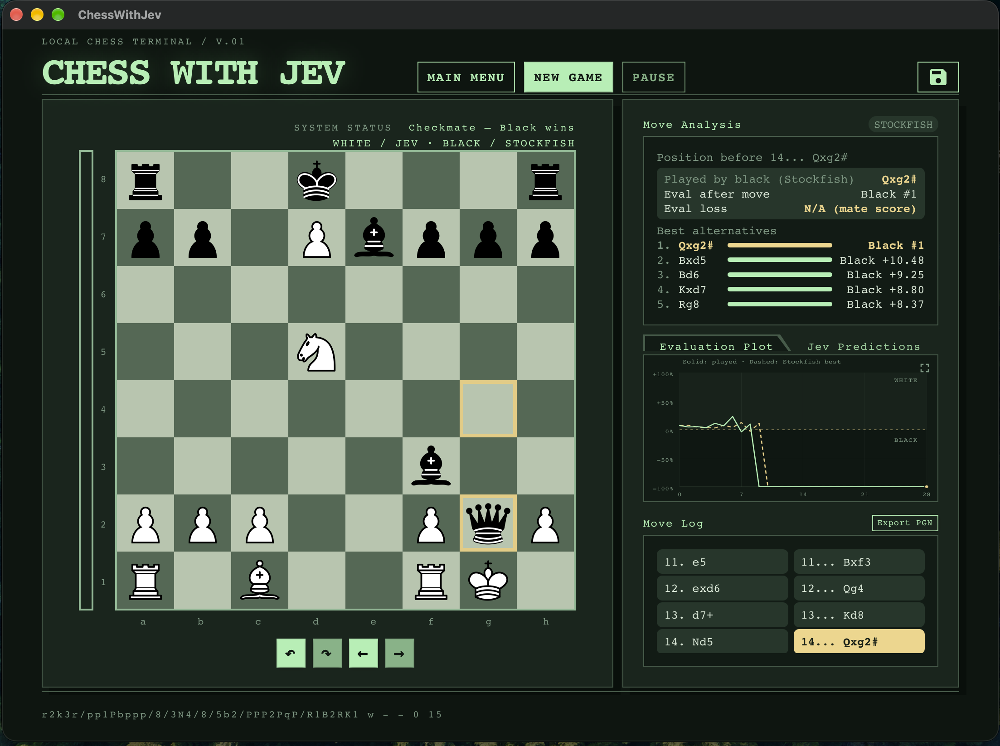

ChessWithJev
Exploring AI Decision-Making Through Chess

I recently made my repository public: ChessWithJev, a small desktop chess application I built to experiment with how Jev from TypeSafe.ai makes decisions in chess.
The goal was simple: see how well a general decision-making system behaves when its choices can be objectively evaluated.
For the project motivation itself, chess happens to be a very convenient environment for this: the board state can be represented precisely, the available actions are deterministic, and the quality of a decision can be compared against a strong traditional chess engine.
The application supports four player types:
- Human
- Jev
- Stockfish
- Random
Any of them can play against any other. This means I can play against Jev myself, run Jev vs Stockfish, compare it against random play, or even let Jev play against Jev.
The idea
One important design decision was that Jev does not need to understand or implement the rules of chess.
That responsibility stays with the application.
For every turn, the application knows the current board state and generates every legal move available to the player. Jev only has to answer one question:
Given this position and these legal moves, which move do you prefer?
The flow is therefore relatively simple:
Chess position (FEN)
↓
Generate all legal moves
↓
Build a Jev Choice
↓
Jev rates the available moves
↓
Rank the results
↓
Play the highest-rated moveThe board position is represented using FEN (Forsyth–Edwards Notation).
A position might therefore result in a Jev request conceptually similar to:
Current position:
rnbqkbnr/pppp1ppp/8/4p3/3P4/8/PPP1PPPP/RNBQKBNR w KQkq - 0 2
Choose the best move:
d4e5 → Pawn from d4 to e5
d4d5 → Pawn from d4 to d5
g1f3 → Knight from g1 to f3
c2c4 → Pawn from c2 to c4
...Example code
state = {
"fen": "rnbqkbnr/pppp1ppp/8/4p3/3P4/8/PPP1PPPP/RNBQKBNR w KQkq - 0 2"
}
questions = {
"move": Choice(
instructions="Choose the best chess move for the player to move.",
criteria={
"d4e5": "Pawn from d4 to e5",
"d4d5": "Pawn from d4 to d5",
"g1f3": "Knight from g1 to f3",
"c2c4": "Pawn from c2 to c4",
},
)
}
with TypeSafeClient(api_key=jev_api_key) as client:
response = client.system_one(
state=state,
questions=questions,
)
answer = response.answers["move"]
print("Selected move:", answer.choice)
print("Probabilities:", answer.probabilities)
print("Confidence:", answer.confidence)Instead of asking Jev to generate a chess move from arbitrary text, the application uses Jev's Choice interface and provides only moves that are actually legal in the current position.
That separation is useful.
The python-chess library handles:
Board state
Rules
Legal move generation
Move validation
Game progressionJev handles:
Decision-making between all available legal movesThe highest-rated legal move becomes Jev's move.
Why use Choice?
Rather than treating Jev like a traditional chess engine, I wanted to treat a chess turn as a decision problem.
At any given position, Jev receives a finite set of actions (all possible legal moves):
Move A
Move B
Move C
...
Move Nand has to express a preference between them.
The application can then expose not only the move Jev ultimately chooses, but also its highest-rated alternatives. That makes Jev's behaviour much more interesting to inspect than simply displaying the final move (If one wants to go deep).
Can every legal chess move fit into a Jev Choice?
This was an interesting practical question for choosing the current architecture.
Nenad Petrović demonstrates a legally reachable position containing 218 legal moves. As of October 4, 2026, Jev supports up to 256 choices.
That means the architecture can simply send the entire legal move set to Jev in one Choice request rather than having to split the position into multiple requests or pre-filter candidate moves.
So the core implementation can remain:
ALL legal moves → one Jev Choice → ranked resultThis was important to me because pre-selecting moves using Stockfish or another engine would influence the experiment before Jev even gets the opportunity to make its decision.
Comparing Jev with Stockfish
Stockfish is also integrated into the application, but it serves a different purpose.
It can act as a player, but it can also provide an independent reference for analysing positions and moves.
The UI therefore lets me look at things such as:
- Jev's chosen move
- Jev's highest-rated alternative moves
- Stockfish's preferred moves
- Position evaluation
- Move-by-move game history
The interesting question isn't necessarily:
Can Jev beat Stockfish?
That would be a rather unfair benchmark for a system that isn't designed to be a dedicated chess engine. See below for Stockfish with low ELO of 1500 vs Jev game.
I'm more interested in questions like:
Does Jev consistently make reasonable decisions?
When does Jev agree with Stockfish?
When they disagree, what move does Jev prefer?
How strongly does Jev prefer its selected move over the alternatives?
Chess gives me a useful environment for observing these differences because there is a very strong external reference available for comparison.
Game: Jev vs Stockfish-1500
Even at an Elo of 1500, Stockfish beat Jev comfortably.
[Event "ChessWithJev"]
[Site "ChessWithJev"]
[Date "2026.10.05"]
[Round "01"]
[White "Jev"]
[Black "Stockfish-1500"]
[Result "0-1"]
1. e4 e5 2. Nf3 Nf6 3. d4 exd4 4. Qxd4 d6 5. Qxd6 cxd6 6. Nc3 Bg4 7. Bb5+ Nfd7 8. O-O Nc6 9. Bxc6 Be7 10. Bxd7+ Qxd7 11. e5 Bxf3 12. exd6 Qg4 13. d7+ Kd8 14. Nd5 Qxg2# 0-1

Logging the games
I also wanted the experiments to be reproducible rather than disappearing once a game was over. The application therefore records completed games and their associated analysis.
The latest game is stored as JSON, while games can also be saved as dated JSON files for later analysis. I am still building the analysis engine to compare between different play modes.
Games can additionally be exported as PGN, making it possible to open them using normal chess tools.
This is also the basis for something I want to explore later: analysing many Jev games rather than looking at individual decisions in isolation.
That could make it possible to inspect patterns such as how Jev performs across different positions, where its largest differences from Stockfish occur, or how its decisions change throughout a game.
Running it yourself
The project is now available in a public GitHub repository: ChessWithJev.
It is currently built using Python and NiceGUI, with Stockfish used for chess analysis.
If you want to experiment with Jev, you provide your own API key through the environment:
export JEV_API_KEY="your-api-key"or load it from a local .env file.
Then you can select Jev as either White or Black and pair it with any of the available players.
So you can run:
Human vs Jev
Jev vs Stockfish
Jev vs Random
Jev vs Jevand watch the decisions directly from the application.
At the moment I've only coded and tested the project for macOS. Linux support is present, but not tested.
What's next?
One thing I'd like to explore next is adding support for local models through Ollama, such as Nimble or Clef.
That introduces a different architectural problem.
Unlike the current Jev approach, models with a smaller maximum number of choices cannot necessarily receive every legal chess move in a single request. Since some chess positions can contain far more than 26 legal moves, supporting those models will require a different decision strategy rather than simply replacing the Jev call.
That's an experiment for another day.
Contact Me for any questions or queries.